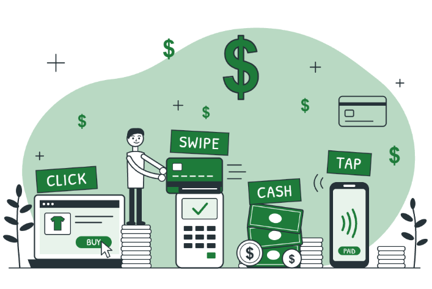

What does friction mean when talking about money and spending?
Friction is anything that slows down spending or makes it less convenient. It can make me stop and think before I buy something.
Build a stronger understanding of money and how it moves through everyday life.

Friction is anything that slows down spending or makes it less convenient. It can make me stop and think before I buy something.
Friction is anything that slows down spending or makes it less convenient. It can make me stop and think before I buy something.
High friction usually makes me spend less because paying takes more effort or time. It gives me a chance to think about purchases beforehand.
Low friction makes spending quick and easy, which can cause me to spend more money without thinking carefully about it.
The pain of paying is the uncomfortable feeling you get when you spend money, especially when you can clearly see how much you are losing.
Cash has more friction because I physically see the money leaving my hands. It can create the feeling of, “I don't have this money anymore,” and makes me question the purchase. Digital payments have less friction because I don't really see the money going away unless I check my account or payment history. This can make it easier to spend more without noticing.
One pro of using cash is that it helps me stick to a budget because I can see how much money I have left in my hands. Another pro is that I can't spend more than I have with me.
One con is that cash can be lost or stolen easily. Another con is that cash is less convenient for online shopping.
One pro of using digital payments is that they are very portable. Another pro is that they are usable almost anywhere.
One con of using digital payments is that they can come with fees for the business owner. Another con is that paying digitally can be so easy that I might spend money without thinking carefully about the total.
A situation where a fast or easy payment method can lead to spending more than I intended could be using Samsung Pay to quickly purchase snacks, clothes, or other items without thinking about how much I am spending. For example, when I am 18, I might tap my phone to pay for several small purchases throughout the day, and the costs could add up to more than I originally planned to spend.
Questions to ask my parent(s)/guardian(s) during my presentation:
This page contains my notes, responses, and reflections for the Money topic. Refer to the official assignment instructions for any additional requirements.